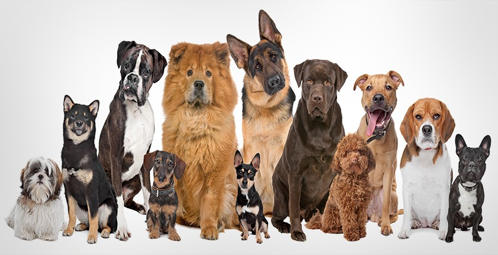

Это страница про собак
Соба́ка — домашнее животное, одно из наиболее популярных животных-компаньонов. Домашняя собака была описана как самостоятельный биологический вид Canis familiaris Линнеем в 1758 году. В настоящее время данное научное название признаётся организациями, такими как Американское общество маммалогов. Продолжительность жизни: 10 – 20 лет.
Мелкие собаки – собаки весом до 10 кг и высотой в холке до 40 см.
Средние собаки – собаки весом 10–25 кг и высотой в холке 40–60 см. Это группа включает самых разнообразных собак по телосложению, характеру и длине шерсти. Крупные собаки – собаки весом более 25 кг и ростом в холке выше 60 см. Чаще это служебные собаки с мощным телосложением и крепкой конституцией.
Огромные собаки – гигантские породы собак, весом более 60 кг и высотой в холке более 60 см. Очень большие сильные собаки, которые нередко имеют устрашающий вид, но добродушный характер.
Короткошерстные собаки – шерстный покров этих собак состоит из короткого прямого, жесткого волоса, который плотно прилегает друг к другу, и имеет минимальную длину на морде, ушах и лапах.
Длинношерстные собаки – собаки с длинным остевым волосом и различным подшерстком.
В зависимости от типа шерсти выделяют следующие группы длинношерстных собак:
- с длинной прямой шерстью и развитым подшерстком (пекинес):
- с длинной прямой шерстью и неразвитым подшерстком (йоркширский терьер);
- с обильной длинной шерстью, в том числе на морде (бриар);
- с длинной жесткой шерстью (керри-блю-терьер);
- с длинной шерстью, скручивающейся в шнуры (пудель);
- с длинной шнуровой шерстью, образующей войлочные ленты – дреды (командор).
В настоящее время деление пород собак на группы по предназначению все менее актуально, потому что многие породы могут выполнять несколько функций. Так, многие служебные собаки, стали собаками-компаньонами. Они живут рядом с человеком, легко обучаемы и поддаются дрессировке, сильно привязываются к владельцу.
